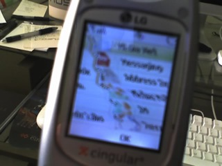

Got a new cellphone couple weekends ago. Not that I wanted too, but I had left my old phone in the pocket of a pair a jeans that I then washed. Not quite sure how I pulled that off, since I’m usually really good about taking the phone out and setting it on my desk at night. Course I didn’t realize this until I was unloading the washer after it finished. When I got down to the bottom, the wash basin was doing this weird vibrating/buzzing thing. I was all wigged out that my washer was dying.
While I was happy to see I didn’t need a new washer, I wasn’t at all thrilled to see my phone at the bottom either. First task was to grab it and pull out the battery. Hopefully it would dry out. Poked around on the web for washed phone stories, overall, lots of success with wet phones (like dropped in toilet wet) drying out and working. Not really much for washed phones though.
Poked around a bit on my cell plan, and discovered that I was eligible for a phone upgrade. So I just figured it was time for a new phone anyways. I got a RazrV3 because there was a store special rebate with that phone that made it basically free. (Not a strong believer in paying for phones am I.)
I did just for giggles let the old phone dry out for a week before trying it again. The screen at least was shot.
